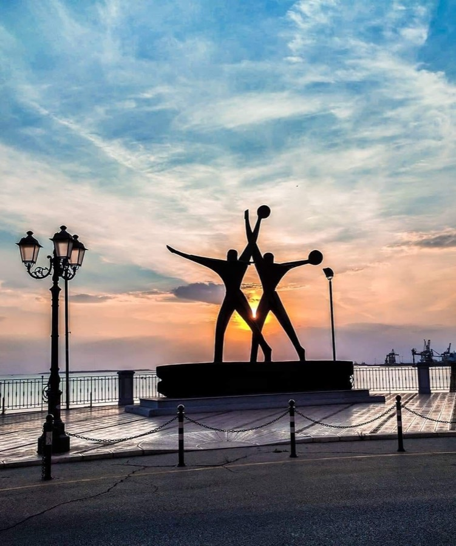
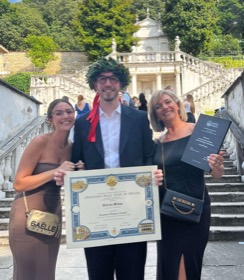
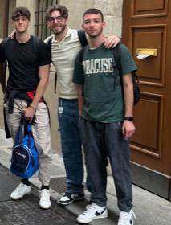

Since 2025
MSc - Business Administration (Double Degree)
Otto-Friedrich-Universität Bamberg · Germany 🇩🇪
Double Degree
GPA > 3.8/4
Only thesis left
You've stumbled upon something special!
Not a billion dollar lottery win (though I wish I could make that happen). But something just as valuable.
Your all-access pass to getting to know me.
Pretty exciting, right?
Jokes aside, welcome to my world!
In a nutshell: I'm a lover of order and simplicity, someone who finds peace in the sound of crashing waves.
I'm an advocate for the dolce vita, and I have a soft spot for travelling 🤩

Welcoming and providing informational support for cruise-ship tourists visiting Taranto.
A web prototype that projects monthly and annual net salary from the gross figure (RAL) in real time and shows where every euro goes: INPS contributions, progressive IRPEF, employee deductions, the 2026 tax wedge, and regional and municipal surtaxes. Built for a standard case (permanent full-time contract, Milan) with every assumption and primary source spelled out in the tool. Bilingual UI, RAL-vs-RAL comparison, 2026 tax-year figures re-verified against primary sources. Code written with Claude Code; the product decisions (what to build, how to break it down, which sources to trust, what to simplify) are mine.
Open the calculator →Designed and built an internal web application from scratch to digitize field operations across 10-15 active job sites, used by 14 employees and replacing WhatsApp based task management and manual daily reporting. It covers separate employee and management workflows for task assignments, working hours, activities, materials and real time issue reporting, and connects job site material usage with inventory records to improve operational visibility. I integrated the Claude API to automate generation of site safety documentation and streamline administrative workflows, and built an attendance export to support payroll processing.
See on YouTube →As part of the Innovation Management course, I collaborated with Riso Scotti and ITIR to reimagine strategic opportunities for the brand, repositioning it as a full brand concept rather than a rice ingredient, balancing creativity, credibility and market potential.
See on LinkedIn →Within Univenture, a collaboration between the University of Pavia, MIBE and the Municipality of Pavia, I worked with Nanocapsule, a pharma startup in advanced drug delivery, to revitalise their business strategy through business model evaluation, competitor analysis, USP redefinition and 5 year financial projections.
See on LinkedIn →Even though Gabriele was with us for a short time, he made it count. Proactive and sharp, he picked things up incredibly fast. What stood out most was his ability to adapt, take initiative and bring fresh energy to the team. Time may have been short, but the impact wasn't. Good luck Gabri!

You know what they say: 'Ogni scarrafone è bello a mamma soja!' Gabriele has always been full of curiosity, finding creative ways to do things his own way, sometimes for the better, sometimes less so. But one thing's for sure: he never backs down from a challenge and puts his heart into what he does.

Working with Gabriele on our university projects was the perfect mix of efficiency and fun. He keeps things moving, finds solutions when everyone else is stuck, and keeps the mood light under deadline pressure. Reliable, quick-thinking and always up for a challenge. 🍻